|
|
Drop shadows on popup windows |
JGoodies Looks'
package for drop shadows support on popup windows (menus, tooltips etc) has been
added:
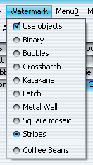
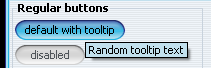
|
|
|
Heap status panel |
Heap status panel when application is run under
decorated mode has been added. The panel can be shown / hidden from the top-level
frame menu. Clicking on the panel runs the garbage collector. This panel is
shown only when substancelaf.heapStatusPanel
VM flag (no value needed) is specified.
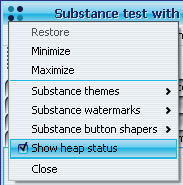
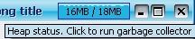
|
|
|
Specifying theme for a button |
Added client properties for the buttons:
- SubstanceLookAndFeel.BUTTON_THEME_PROPERTY specifies
hard-coded theme for the associated button. Value is display name of the theme.
- SubstanceLookAndFeel.BUTTON_PAINT_ACTIVE_PROPERTY specifies
that the associated button should always be painted colored when
it's enabled. Value must be Boolean.TRUE.
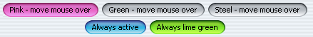
|
|
|
Specifying sizing policy for the buttons |
Added client property for the buttons.
SubstanceLookAndFeel.BUTTON_NO_MIN_SIZE_PROPERTY specifies
that the associated button should be as small as possible (no minimum width or height).
Value must be Boolean.TRUE.
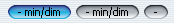
|
|
|
Rectangular shaper for buttons |
Added optional rectangular shaper for buttons. Can be set using:
- -Dsubstancelaf.buttonShaper=org.jvnet.substance.button.ClassicButtonShaper
- for all application buttons.
- SubstanceLookAndFeel.setCurrentButtonShaper("org.jvnet.substance.button.ClassicButtonShaper")
- for all application buttons.
- SubstanceLookAndFeel.setCurrentButtonShaper(new ClassicButtonShaper())
- for all application buttons.
- Using client property SubstanceLookAndFeel.BUTTON_SHAPER_PROPERTY
on a specific button. Value should be "org.jvnet.substance.button.ClassicButtonShaper"
string.
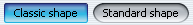
|
|
|
Wave gradient painter for buttons |
Added optional wave gradient painter for buttons. Can be set using:
- -Dsubstancelaf.gradientPainter=org.jvnet.substance.painter.WaveGradientPainter
- for all application buttons.
- SubstanceLookAndFeel.setCurrentGradientPainter("org.jvnet.substance.painter.WaveGradientPainter")
- for all application buttons.
- SubstanceLookAndFeel.setCurrentGradientPainter(new WaveGradientPainter())
- for all application buttons.
- Using client property SubstanceLookAndFeel.GRADIENT_PAINTER_PROPERTY
on a specific button. Value should be "org.jvnet.substance.painter.WaveGradientPainter"
string.
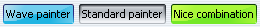
|
|
|
Additional entries in system menu |
Additional entries in the system menu allow
changing Substance theme, watermark, button shaper and gradient painter
without the need to code this functionality in the application itself.
These entries are shown when neither substancelaf.noExtraElements
VM flag is specified, nor SubstanceLookAndFeel.NO_EXTRA_ELEMENTS
client property is put in the UIManager with value Boolean.TRUE.
Example of theme system menu entry:

Example of watermark system menu entry:
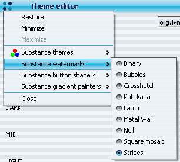
Example of button shaper system menu entry:
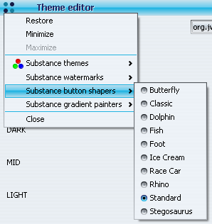
Example of gradient painter system menu entry:
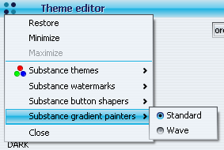
|
|
|
Aligning menu items |
Menu items in the same JMenu or JPopupMenu
are aligned so that the texts start at the same X offset. This functionality takes
into account menu item icons, menu item marks (for JRadioButtonMenuItem
and JCheckBoxMenuItem) and nested menu icons.
Before:
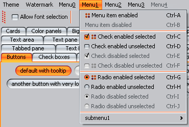
After:

|
|
|
Visual indication of not-saved frames |
Support for Mac-like
indication on frames that have unsaved content. Application should set
SubstanceLookAndFeel.WINDOW_MODIFIED client property
on either the JRootPane of the corresponding frame / dialog / internal frame
or on the JInternalFrame. The value that corresponds to unsaved state
is Boolean.TRUE. See 31-second AVI
movie (530 KB) illustrating the technique.
Pulsating loop on JInternalFrame - red theme:

Pulsating loop on JInternalFrame - yellow theme:

Pulsating loop on JInternalFrame - tooltip on close button in unsaved state:

Pulsating loop on JDesktopIcon:

Pulsating loop on JFrame:

|
|
|
Visual indication of not-saved tabs |
Support for Mac-like
indication on tabs in JTabbedPane that have unsaved content. Application should set
SubstanceLookAndFeel.WINDOW_MODIFIED client property
on the tabbed pane's Component (if it's JComponent). The value that
corresponds to unsaved state is Boolean.TRUE.
See 67-second AVI movie (1.2 MB) illustrating the technique.
Pulsating loop on JTabbedPane - red theme (animation start):

Pulsating loop on JTabbedPane - orange theme (midway through animation):

Pulsating loop on JTabbedPane - yellow theme (animation flex point):

|
|
|
Close button and rollover effects on tabs |
Support for NetBeans-like
close button on tabs in JTabbedPane. Application should set
SubstanceLookAndFeel.TABBED_PANE_CLOSE_BUTTONS_PROPERTY
client property on either the tabbed pane's Component (if it's JComponent),
JTabbedPane (for all tabs of that pane) or the UIManager
(for all tabbed panes). The value that corresponds to tab with close button
is Boolean.TRUE. In addition, there's rollover effect on enabled tabs (like
on any other control such as buttons or scroll bars).
See 45-second AVI movie (810 KB) illustrating the technique.
Close button on active tab in JTabbedPane - mouse not over close button (includes mouse pointer):

Close button on active tab in JTabbedPane - mouse over close button (includes mouse pointer):

Close button on inactive enabled tab in JTabbedPane - mouse not over tab (includes mouse pointer):

Close button on inactive enabled tab in JTabbedPane - mouse over tab but
not over close button (includes mouse pointer):

Close button on inactive enabled tab in JTabbedPane - mouse over tab and
over close button (includes mouse pointer):

|
|
|
Option for specifying base font size as VM flag |
The substancelaf.fontSizeExtra
VM flag specifies the base font size for all UI controls. The value is integer followed by optional
plus + or minus - sign. The integer value plus 11 is the base font size
for all UI controls. If plus sign follows the integer value, the base font will be bold.
If this flag is not specified, the base font size is 11. For example,
-Dsubstancelaf.fontSizeExtra=3+ results in
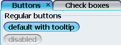
|
|
|
Ghost mark on unselected radio buttons |
Unselected radio buttons show "ghost" mark
to indicate that they "are" radio buttons:
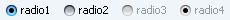
|
|
|
Focus ownership indication |
Buttons, checkboxes and radio buttons that own
focus are shown with dash contour:
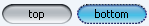
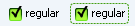
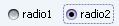
|
|
|
Additional color chooser panel |
Xoetrope XUI
has contributed their color wheel chooser panel:
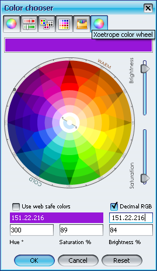
|
|
|
Translucent watermarks on menus |
The watermark painting on menus is translucent, allowing
the menu to "stand out" better:
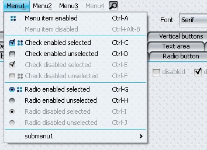
|
|
|
Additional themes |
Twenty one additional themes have been provided
in the Theme pack
plugin. Among others:
Bloody Moon in org.jvnet.substance.themepack.theme.ExtraBloodyMoonTheme

Brown Velvet in org.jvnet.substance.themepack.theme.ExtraBrownVelvetTheme

Earth Fresco in org.jvnet.substance.themepack.theme.ExtraEarthFrescoTheme

Green Pearl in org.jvnet.substance.themepack.theme.ExtraGreenPearlTheme

Mahogany in org.jvnet.substance.themepack.theme.ExtraMahoganyTheme

Orchid Alloy in org.jvnet.substance.themepack.theme.ExtraOrchidAlloyTheme

Turquoise Lake in org.jvnet.substance.themepack.theme.ExtraTurquoiseLakeTheme

Yellow Marine in org.jvnet.substance.themepack.theme.ExtraYellowMarineTheme

|
|
|
Additional watermark |
Additional Brushed metal watermark has been added
in org.jvnet.substance.watermarkpack.ExtraBrushedMetalWatermark.
This watermark is in the Watermark pack
plugin.

|
|
|
Support for NetBeans components |
Custom UI delegates for NetBeans components (tabbed
container and sliding button) have been added under NetBeans.
Example of custom tabbed container:

Example of custom sliding button:

|
|
|
Additional button shapers |
Eight additional button shapers have been provided
in the Button shaper pack
plugin. They are:
Butterfly in org.jvnet.substance.shaperpack.button.ButterflyButtonShaper

Dolphin in org.jvnet.substance.shaperpack.button.DolphinButtonShaper

Fish in org.jvnet.substance.shaperpack.button.FishButtonShaper

Foot in org.jvnet.substance.shaperpack.button.FootButtonShaper

Ice Cream in org.jvnet.substance.shaperpack.button.IceCreamButtonShaper

Race Car in org.jvnet.substance.shaperpack.button.RaceCarButtonShaper

Rhino in org.jvnet.substance.shaperpack.button.RhinoButtonShaper

Stegosaurus in org.jvnet.substance.shaperpack.button.StegosaurusButtonShaper

|